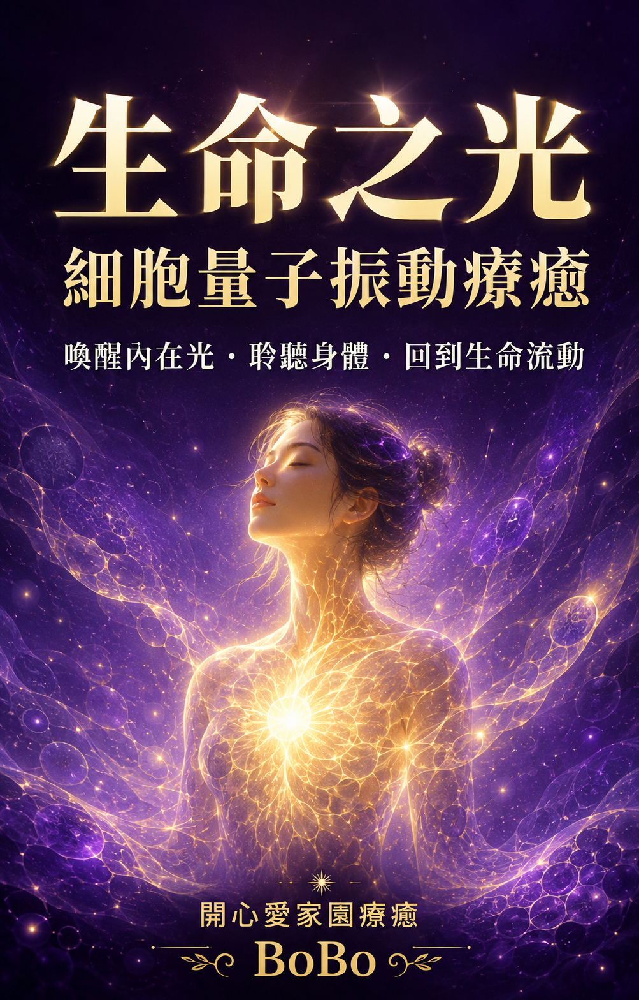

1
☀
金光降臨
讓金黃色的生命之光灑落，先感受支持、溫暖與「我並非孤單」的安全感。

不是要求自己立刻變好，而是先讓身體知道：此刻，我願意聽見你。
「生命之光」代表每個人內在仍然存在的活力、希望與覺知；即使走過疲憊或黑暗，它也沒有真正消失。
「細胞」在這套療癒中，是用來練習深入感受身體的意象；「量子振動」則是對微細感受、聲音、意念與內在共振的靈性描述。
這些名稱是身心靈與象徵性的語言，並不是量子物理技術，也不表示能改變細胞、診斷疾病或保證治療效果。
這套療癒不是先有一個名稱，再拼湊內容。它源自 BoBo 一次真實的冥想自我療癒經驗。
很多金黃色線條從上方灑落，紫色點點粒子隨後出現；黑色霧氣慢慢包圍，最後紫色的光再次升起，把黑暗一點一點撥開。
在那個過程裡，BoBo 感受到的不是逃離黑暗，而是一股很清楚的力量：即使沉重曾經靠近，內在的光仍然能醒來，找回界線、方向與保護自己的能力。
黑暗曾經靠近你，卻沒有成為你。
真正撥開黑暗的光，也一直存在於你裡面。
依照真實冥想畫面形成的原創引導路徑。每一階都不是要求你看見同樣的景象，而是陪你走過接收、覺察、承接、轉化與整合。
讓金黃色的生命之光灑落，先感受支持、溫暖與「我並非孤單」的安全感。
讓紫色粒子慢慢聚集，象徵直覺、清醒、勇氣與內在力量正在回來。
不驅趕疲憊、委屈、恐懼或沉重，只在安全範圍內允許它們被看見。
感受紫色的光穩定擴展，為自己找回界線、空間與選擇的主導權。
讓金光與紫光回到身體，帶著一份新的力量與一句支持自己的話回到日常。
每個人的畫面與感受都不同。你不需要看見金光、紫光或黑霧；呼吸、身體感受、情緒、句子，甚至「暫時沒有感覺」，都可以是你的療癒經驗。
依照 BoBo 真實冥想經驗編寫｜可自行練習，也可由 BoBo 放慢語速帶領
讓自己選擇一個舒服的姿勢。你不需要坐得很直，也不需要立刻放鬆。
先看看此刻的空間，找到三樣你看得見的東西。感覺椅子、床或地面正在承托你。
慢慢吸氣……再把氣呼出去。問問自己：「此刻，我願意讓自己被陪伴嗎？」
停留三個自然呼吸。
想像很多柔和的金黃色光線，像溫暖的細雨，從上方慢慢灑落。
它不強迫你改變，只是經過頭頂、肩膀、心口、腹部，再流向雙腳。讓身體自己決定，今天願意接收多少。
在心裡輕輕說：「我允許支持靠近我。我不需要獨自承擔一切。」
停留約四至五個呼吸；沒有畫面時，只感受呼吸或想像溫暖即可。
現在，留意金光之中是否出現一點一點紫色的光。它們可以從心口、身體周圍，或任何讓你感到安全的位置慢慢亮起。
每一點紫光，都代表一份正在回來的清醒、勇氣、直覺與界線。
對自己說：「我的力量不需要很大聲。它正在一點一點回到我裡面。」
停留約四個呼吸，感受紫光慢慢聚集。
如果有黑色霧氣、沉重、情緒或不舒服的感覺出現，不需要靠近它，也不需要把它趕走。讓它停在一個你覺得安全的距離。
你可以只是知道：這裡也許有疲憊、委屈、害怕，或一些暫時說不清楚的感受。
輕輕告訴它：「我看見你曾經保護我。現在，我可以選擇靠近多少。」
若情緒變得太強，立即睜開眼睛，說出今天的日期與所在位置，跳到最後的回到日常。
把注意力帶回心口或身體中央的紫色光點。它不需要與黑霧戰鬥，只需要穩定地變亮、變寬。
隨著每一次呼氣，紫光從身體向外展開，為你清出呼吸的空間。黑霧可以慢慢退到更遠的地方，直到你重新感覺自己的位置。
對自己說：「我有權保護自己的空間。我有權選擇讓什麼留下、讓什麼離開。」
停留五個自然呼吸；讓紫光以自己的速度擴展。
現在，讓上方的金光與身體裡的紫光慢慢相遇。金光帶來支持，紫光帶來力量；它們在你周圍形成柔和、穩定的生命之光。
不用填滿每個地方，只照亮今天願意被照亮的部分。問問自己：「此刻，我最需要帶回生活的是什麼？」
也許是一個字、一句話、一個身體感受，也可以暫時沒有答案。
安靜停留片刻，讓答案自己出現。
把注意力帶回呼吸。感覺身體與椅子、床或地面的接觸。輕輕活動手指、腳趾和肩膀。
當你準備好，張開眼睛，再次看見周圍三樣東西。
最後對自己說：「黑暗曾經靠近我，卻沒有成為我。我的光、界線與力量，正在回到我的生活。」
不用急著站起來，先喝一點水，再慢慢移動。
先不要急著分析。寫下三件事：① 身體現在最明顯的感受；② 冥想中出現的情緒、顏色或句子；③ 今天最想留給自己的一句話。若沒有畫面，也可以如實寫下「我今天只是安靜地呼吸」。
讓意念不只停在腦海，而是慢慢落回呼吸與身體。
用溫柔的光作為意象，陪伴自己看見此刻最需要關照的位置。
留意呼吸、緊繃、溫度與微細感受，不批判，也不勉強。
以呼吸聲、輕柔發聲或引導語，感受聲音在身體裡的共鳴。
允許疲憊、委屈、害怕或空白被看見，不催促自己跨過。
辨認現在不再支持自己的內在語言，練習新的選擇與允許。
重新感覺「我還在這裡」，找回一小步可以前進的力量。
每次體驗會依你當下的狀態調整，不需要努力看見畫面，也沒有標準答案。
先了解你想整理的感受、生活議題與界線，確認當下適合的步調。
從呼吸開始，覺察身體哪裡緊、哪裡累、哪裡需要更多空間。
配合光的觀想、聲音振動與溫柔語句，陪伴內在慢慢鬆開。
把浮現的情緒、畫面、句子或沒有感覺，都當作可被理解的經驗。
以接地、喝水與一個可行的小行動收尾，讓療癒不只停在當下。
你不需要進入任何特殊狀態。舒服坐著，雙腳感覺地面，眼睛可張開或輕閉。
若練習讓你不舒服、暈眩或情緒太強烈，請立即停止，張開眼睛、感覺雙腳並尋求合適支持。
B O B O ❤️ 我 在
如果你最近感到疲憊、內在混亂、失去方向，或只是想更深地聆聽自己的身體與心，可以先聯絡 BoBo，了解這項療癒是否適合你。
WhatsApp 聯絡 BoBo